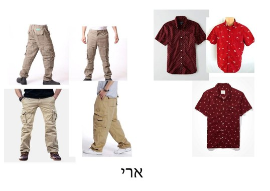
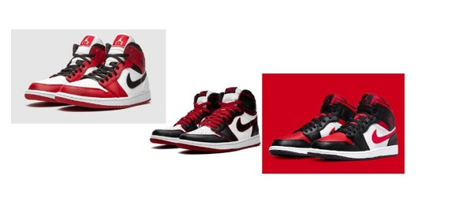
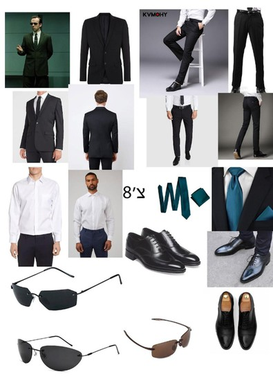
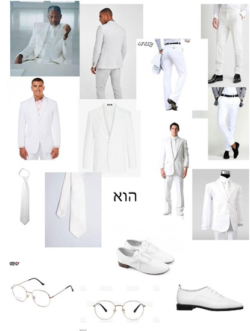
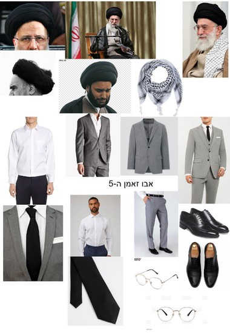

הסאונד בסרט יהיה מורכב בעיקרו משילוב של סאונד דיאגטי וסאונד אקסטרה דיאגטי. ארי חווה את העולם סביבו בצורה מוקצנת דרך נקודת מבט שהרכיב לעצמו במהלך השנים, לכן הרבה מהסאונד הדיאגטי בסרט יוקצן לרמה של סאונד אקסטרה דיאגטי ויהפוך לסאונד המשקף את מחשבותיו ורגשותיו של ארי. זה יבוא לידי ביטוי בעזרת קולות הטלוויזיה שיתעצמו וייחלשו במהלך הסצנה בהתאם למתרחש, בעזרת גשרי סאונד שיחברו בין סצנות, ועוד.
אבסורד קומי בא לידי ביטוי בקולנוע בדמויות או סיפור שמסיקות או יוצרות מסקנות בעלות היגיון רופף למציאות אבל עדיין הגיוניות מספיק כדי שהקהל יבין למה הן קורות או למה הדמויות הסיקו את מה שהם הסיקו אבל מוזרות כל כך שהן יוצרות סצנות הזויות עד כדי גיחוך.
סאונד באבסורדיזם קומי אמור להיות מנוגד לרגש של הצופים או לסיטואציה בה הדמויות נמצאות ובכך ליצור סיטואציה מגוחכת, בנוסף לכך הסאונד אמור להפתיע אותם. לדוגמה בסרט: ארי לחוץ מהעובדה שהוא קיבל פקודה לקפוץ מהגג אבל בניגוד ללחץ שלו ולחוסר הסבלנות שלו בטלפון מתנגנת מוזיקה רגועה וארוכה..
סאונד קומי צריך להיות קלילי, מהיר וחייב להיות מתוזמן עם הבדיחה כדי להעצים אותה. סאונד קומי צריך גם לתת תחושת רוגע אצל הצופים.
למרות שהסאונד הוא ריאלסטי ברובו הרבה פעמים הסאונד יהיה חלק מהעולם עצמו לדוגמה: במת על המתים ישנו קרב בבר בין השורדים (ביניהם הדמות הראשית) והזומבים, בתחילת הקרב מתחיל להתנגן לפתע השיר don't stop me now שיר קצבי שמתאים לאווירה הקצבית ולתחושה חסרת המנוחה של השורדים אך לעומת סרטים אחרים בהם השיר מושמע ברקע ללא סיבה בתוך העולם של הסרט במת על המתים הדמויות מתיחסות לשיר ולאיך שהוא מתאר את האווירה.
ארי נוהג להתלבש עם דגמ"חים בצבעים דהויים, כדי לשמור על היעילות של הריבוי בכיסים מבלי למשוך תשומת לב רבה מדי לפלג גופו התחתון. ארי אוהב לאסוף פריטים במהלך חייו היומיומיים, לכן הוא מוצא את ריבוי הכיסים שבמכנסי דגמ"ח מאוד שימושי ויעיל לו.
למרות שעל פי הוראות מפורשות שקיבל מהסוכנות הוא אמור לא לבלוט בסביבתו, לארי יש צורך שישימו לב אליו, אחת מהדרכים שבהן הוא מבליט את עצמו היא לבישת חולצות בצבעים עזים. דרך נוספת דרכה ארי נוטה לבלוט היא דרך נעליו, הוא דואג תמיד להתאים את חולצתו לנעליו. כ70 אחוז מנעליו של ארי הם סניקרס של אספנים בצבעים עזים שתואמים את שאר ארונו.
במהלך הסרט ארי לובש חולצה מכופתרת בצבע בורדו, ודגמ''ח בצבע בז' דהוי/חאקי, בשילוב עם נעליי אייר ג'ורדן 1 בפלטת צבעים: אדום, שחור ולבן.
 צ'8 כמעט תמיד לבוש בחליפה המורכבת ממכנסיים שחורים מחויטים, חולצה לבנה מכופתרת, ג'קט שחור, ועניבה בצבע ההיכר של סבא"ה – ציאן כהה. על רגליו הוא נועל נעלי עור שחורות, ועל ראשו מרכיב משקפי שמש המסתירים את עיניו למחצה. את משקפי השמש הוא מרכיב כדי לנסות לנתק את הסובבים אותו ממחשבותיו וליצור דיסטאנס. הסוכן מסתובב עם תג של הסוכנות איתו בכל עת, אשר מחובר למכנסיו באמצעות תופסן וסליל חוט.
"הוא" לבוש כולו בלבן, חולצה מכופתרת לבנה שעליה ג'קט לבן ועניבה לבנה, מכנסיים לבנים ונעלי עור לבנות
אפריים בימבו
אבו זאמן החמישי
